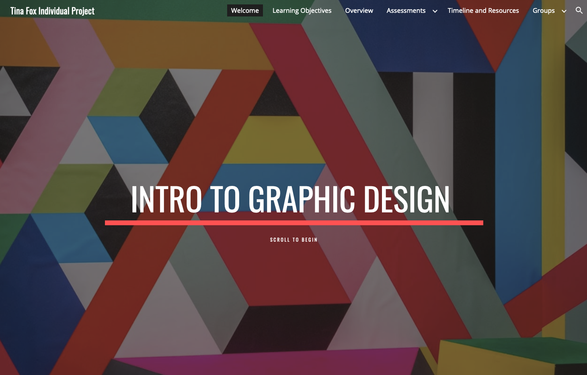
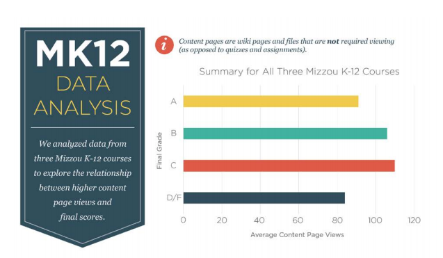

Projects
Goal 1
Goal 1: Design and Development of Learning Systems
I am able to design and develop innovative, aesthetic, effective and sustainable learning technologies based on theory-grounded research.
My first example is an instructional site I created in Google Sites (Fall 2019).
Learning with Web-based Technologies
In this course, I used the Digital Didactical Design (DDD) model to create one lesson of an instructional site for an online undergraduate graphic design course. Students learn how to create a visual identity and work in teams to design and apply a logo to different marketing products. All of their collaboration occurs online through various communication and design tools. They read textbook chapters, watch videos, and listen to podcasts individually before working in groups to design rough drafts of a logo for a real client. Once the logo is complete, students apply it to different marketing products and then showcase the brand identity they’ve created on their team website.
Visit the site below.
Strengths & Weaknesses
One of the strengths of my instructional site is that it presents students with an authentic problem to solve, one with multiple solutions. There is no right or wrong way to design a logo; students learn about logo design through "reflective making." They first design a logo individually for themselves and get feedback on it before pairing up with their group members to apply what they've learned to a larger logo design and branding project.
One weakness with this project is that it is designed in Google Sites rather than Canvas. If I were designing this in the real world, I would use the LMS and break this lesson into a module with individual pages, assignment submissions, and discussions. As the site exists now, it refers students to their Canvas LMS for discussions and assignment submissions, which is somewhat clunky.
Goal 2
Goal 2: Front-End Analysis and System Evaluation
I developed critical and analytical skills for data collection and evaluation and can reflect and apply these skills to assess and evaluate learning systems.
My second example is a learning analytics report I prepared for Mizzou K-12 (Spring 2018).
Analytics Report for Mizzou K-12 | Learning Analytics
In Learning Analytics, I learned how to collect and analyze data to implement instructional change. I also gained a solid understanding of student dashboards, predictive analytics, data protection, and data visualization. For the final project, I analyzed real student data from Mizzou-K12 (now Mizzou Academy) and wrote a report summarizing my findings and recommending next steps for MK12’s administrative team. My analytics report includes a data visualization of my findings.
Open the image below.
Strengths & Weaknesses
After analyzing the data, I was able to find an interesting pattern: As grades declined, students' Canvas page views increased, up until the C threshold. This suggested that B and C students were either seeking out help in the content pages as their grades slipped, or beginning the course with good intentions and high page views and then losing interest as their grades fell. A, D, and F students did not demonstrate these increased page views. This lead me to recommend that MK12 administrators survey or interview B and C students to see why the content pages did not help their grades. I believe that my summary of these findings, along with the accompanying data visualization, is a concise and thorough report on this particular aspect of MK12's data.
The weakest part of this project is my understanding of R statistical software. I followed along with the R video tutorials to clean up my data, but without a thorough understanding of the software, I struggled when my data failed to conform to the example in the tutorial. Fortunately, our instructor was lovely and patient and was able to create on-the-fly videos to help the class.
I also struggled with Tableau data visualization software. Despite its welcoming, streamlined interface, it is not an easy tool to learn quickly. I regret that I didn't have the time to learn and use it for my final data visualization.
Goal 3
Goal 3: Leadership & Social Responsibility
I developed competencies for socially responsible technology leadership.
My third example is a video I created on cultural sensitivity in online teaching (Fall 2017).
Cultural Awareness Video | Introduction to Research in ISLT
In Introduction to Research, I created a video promoting cultural awareness in online education based on the idea of action research. Action research focuses on studying some aspect of behavior while simultaneously thinking about ways to implement change and generate practical solutions—in other words, taking positive action while conducting research. In my video, I present the results of current research into cultural sensitivity in online teaching and share information on how to be more culturally responsive.
Strengths & Weaknesses
I am happy with the organization of the video (although I would change many production-related things now that my video production skills have improved). This type of short, animated video makes it easy to disseminate information quickly in small, manageable chunks. My video shares the research-based guidelines for culturally sensitive online instruction in a much more visual and memorable way than a dry research paper. I've followed Mayer's principles for reducing cognitive load by keeping the video short and segmented into easily digestible bits of information.
With that being said, the biggest weakness of this video is the lack of substantive research I gathered during the development phase. I have since collaborated with a fellow instructional designer to produce a series of handouts on culturally responsive pedagogy that address very specific online teaching methods instructors can use to promote inclusivity in their classrooms. At the time of this course, however, I was new to the topic of cultural awareness and focused mainly on the differences between learners from collectivist and individualistic cultures, ignoring entirely the cultural differences between those from different socioeconomic backgrounds in the United States.